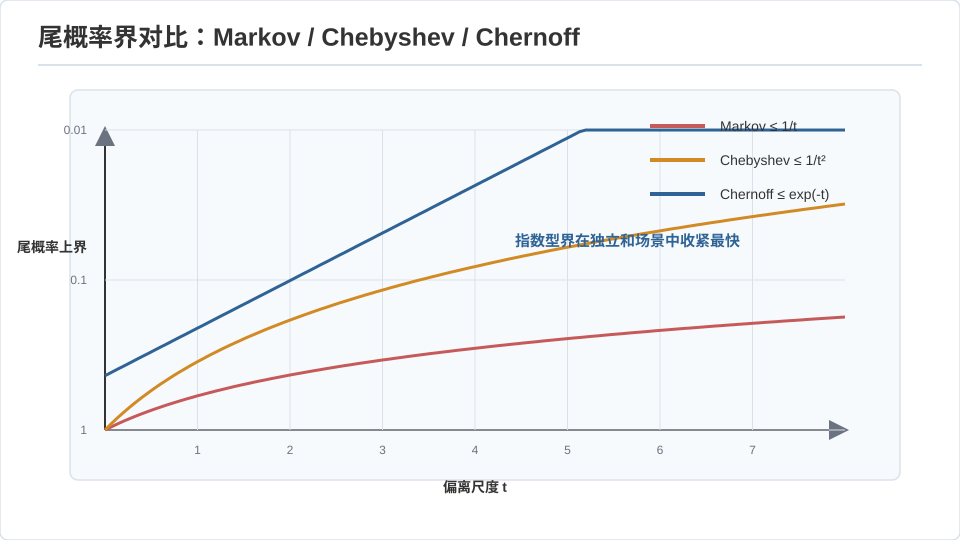
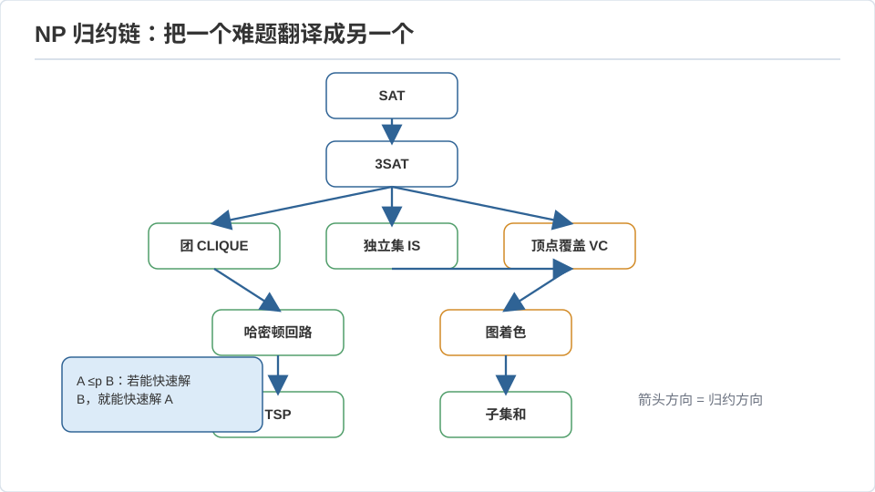
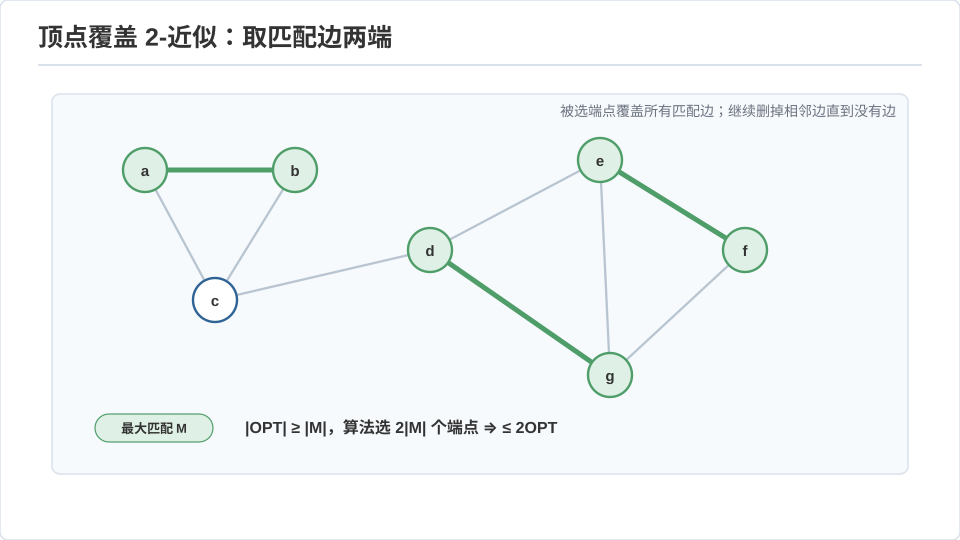

算法 III · 随机化、近似与 NP 归约
对标：CS170 / CLRS 第 34–35 章 / Motwani–Raghavan Randomized Algorithms ｜ 前置：algo-01/02、数学站概率线（期望、集中不等式） 算法理论的成年礼：承认有些问题（很可能）没有高效精确解，然后优雅地退让——用随机换简单、用近似换可行、用归约把"我不会"精确地转化为"没人会"。这一页对你概率底子的调用最直接：随机算法的分析就是期望与集中不等式的应用题。
1. 随机化：用掷硬币换简洁与速度
两类随机算法：Las Vegas（结果永远对，时间是随机变量——如随机快排）；Monte Carlo（时间固定，结果以概率对——如素性测试）。
样板一：随机快排 随机选 pivot，期望比较次数 \(O(n\log n)\)。分析【推导】：设 \(X_{ij}\) = 元素 \(i,j\) 是否被比较（0/1）。它们被比较当且仅当在 \(\{i,\dots,j\}\) 中 \(i\) 或 \(j\) 最先被选为 pivot，概率 \(\frac{2}{j-i+1}\)。期望总比较数
没有"最坏输入"——因为随机性在算法内部，对手无法构造坏例。这是随机化最迷人的用途：把最坏情况的脆弱换成期望的稳健。
样板二：Karger 随机最小割 反复随机收缩边，最后剩两个点即一个割。单次成功概率 \(\ge \frac{2}{n(n-1)}\)，重复 \(O(n^2\log n)\) 次以高概率找到全局最小割——一个不用最大流的最小割算法，纯靠运气 + 重复。分析核心是"最小割的边少 ⇒ 随机收缩不太可能毁掉它"。
样板三：指纹与哈希 判两个大对象是否相等，随机取一个哈希/多项式求值点比较——出错概率可压到任意小（Rabin–Karp 字符串匹配、Freivalds 验证矩阵乘 \(O(n^2)\) 而非重算 \(O(n^3)\)）。
2. 集中不等式：随机算法为什么"几乎总对"
随机分析的三级武器（🔗 数学站概率/高维概率线）：
- Markov：\(P(X\ge a)\le E[X]/a\)——最弱，只需非负。
- Chebyshev：\(P(|X-\mu|\ge k\sigma)\le 1/k^2\)——用上方差。
- Chernoff–Hoeffding：独立有界变量之和指数集中 \(P(|X-\mu|\ge t)\le 2e^{-2t^2/n}\)——随机算法的主力，"重复 \(O(\log(1/\delta))\) 次取多数即把错误率压到 \(\delta\)"的定量依据。

读法：Chernoff 是"大数定律的定量版"。它把"重复几次投票就可靠"从直觉变成公式——这正是把 Monte Carlo 算法的错误率工程化的工具。
3. NP 与归约：把"我不会"变成"没人会"
P = 多项式时间可解；NP = 多项式时间可验证（给一个证书能快速检验）。P vs NP（\(P\overset?=NP\)）是计算机科学的中心悬案：验证容易是否意味着求解容易？
归约是这一切的语法：\(A \le_p B\) 意为"\(A\) 能在多项式时间内转化为 \(B\)"——若 \(B\) 易则 \(A\) 易，反之若 \(A\) 难则 \(B\) 难。NP 完全（NPC） = NP 中最难的一类：所有 NP 问题都归约到它。Cook–Levin 定理：SAT 是 NPC（第一块基石——把"多项式时间验证器的运行"编码成布尔公式）。此后靠归约链传播：SAT → 3SAT → 团/独立集/顶点覆盖 → 哈密顿回路 → TSP → 子集和 → 图着色……证一个新问题 NP 难，就是从已知 NPC 问题归约过来。

方法论（工作技能）：遇到一个新问题卡住时，先问"它像哪个 NPC 问题？"能归约过来就别再找多项式算法了——归约是"知道何时该放弃精确解"的专业判断力，比会证更值钱。
4. 近似算法：NP 难之后怎么办
放弃"精确"换"可证明的接近"。近似比 \(\rho\)：解 \(\le \rho\cdot\) 最优（最小化问题）。三种典型手法：
- 贪心 + 组合论证：顶点覆盖——反复取一条未覆盖边的两个端点，得 2-近似（这条边至少要覆盖一个端点，我们多拿一个，故 \(\le 2\times\) 最优）。集合覆盖贪心给 \(\ln n\)-近似（且这是最优可能，除非 P=NP）。
- LP 松弛 + 舍入（🔗 algo-02 的对偶）：把整数规划松弛成 LP、解出分数解、再舍入成整数解，用 LP 最优当下界证近似比。原始–对偶方法是其系统化。
- 随机舍入：MAX-CUT 随机分组给 0.5-近似；用半定规划（SDP）松弛 + 随机超平面舍入（Goemans–Williamson）给 0.878-近似——凸优化进入近似算法的高光时刻。

不可近似性：PCP 定理 ⇒ 某些问题连近似都 NP 难（如一般 TSP 无常数近似、MAX-3SAT 超过 7/8 就难）。"能近似到多好"本身是一门精确的理论。
5. 练习与要点
例 1（随机分析手推） 抛 \(n\) 个球进 \(n\) 个桶，最大桶的期望负载？答：\(\Theta(\log n/\log\log n)\)——"两个哈希取较空者"（power of two choices）把它降到 \(\Theta(\log\log n)\)，负载均衡与哈希表设计的理论核心，一道漂亮的概率题。
例 2（归约练手） 证明"独立集"NP 难：从"团"归约——独立集在补图上就是团，多项式变换 ✓。归约常常只是换个视角看同一张图。
例 3（近似比证明） 顶点覆盖的 2-近似里，我们取的边构成一个匹配 \(M\)；任何覆盖必须覆盖 \(M\) 的每条边、故 \(\ge|M|\)，而我们的解 \(=2|M|\le 2\cdot\)OPT ✓——"用一个下界结构（这里是匹配）夹住最优"是所有近似证明的骨架。\(\blacksquare\)
下一页：高级算法 I——当数据大到存不下，流算法用一遍扫描 + 亚线性空间给出近似答案。